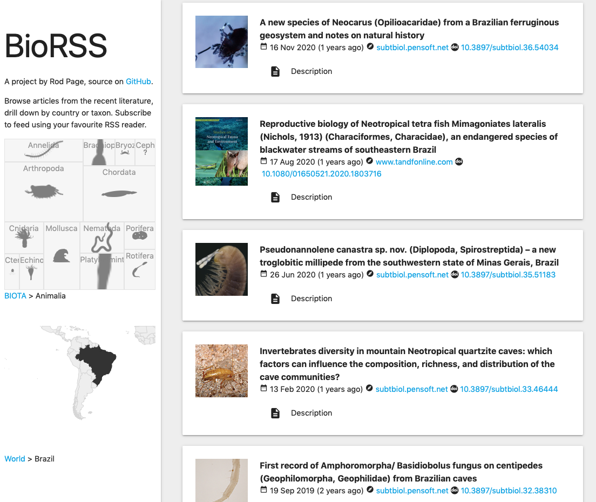
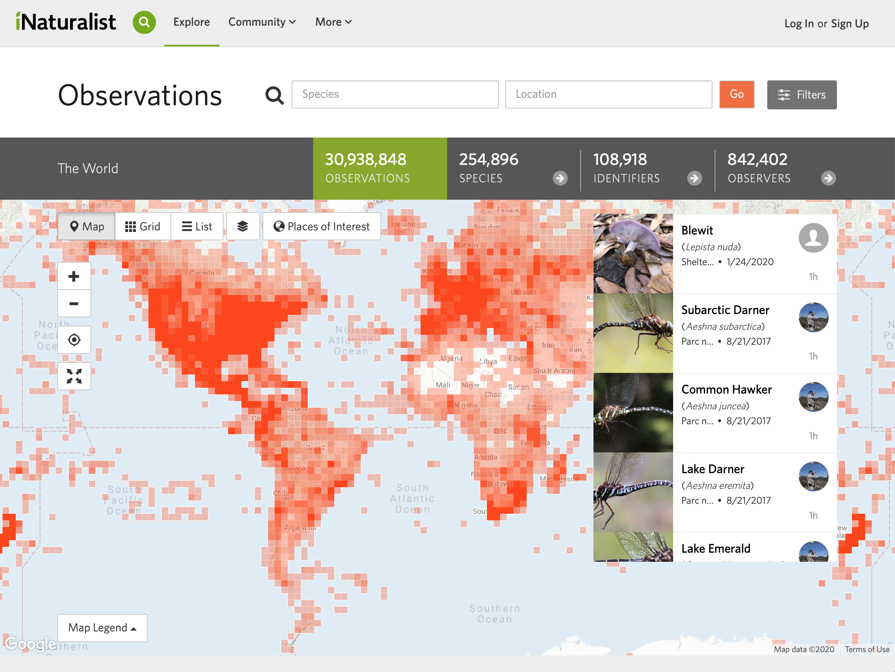

Biodiversity Informatics is the application of informatics techniques to biodiversity information for improved management, presentation, discovery, exploration and analysis. It typically builds on a foundation of taxonomic, biogeographic, or ecological information stored in digital form, which, with the application of modern computer techniques, can yield new ways to view and analyse existing information, as well as predictive models for information that does not yet exist (see niche modelling). Biodiversity informatics is a relatively young discipline (the term was coined in or around 1992) but has hundreds of practitioners worldwide, including the numerous individuals involved with the design and construction of taxonomic databases. The term "Biodiversity Informatics" is generally used in the broad sense to apply to computerized handling of any biodiversity information; the somewhat broader term "bioinformatics" is often used synonymously with the computerized handling of data in the specialized area of molecular biology.
For some reviews of the field, see:
Peterson, A. T., Knapp, S., Guralnick, R., Soberón, J., & Holder, M. T. (2010). The big questions for biodiversity informatics. Systematics and Biodiversity, 8(2), 159–168. doi:10.1080/14772001003739369
Hardisty, A., Roberts, D. A decadal view of biodiversity informatics: challenges and priorities. BMC Ecol 13, 16 (2013). https://doi.org/10.1186/1472-6785-13-16
Bingham H, Doudin M, Weatherdon L, Despot-Belmonte K, Wetzel F, Groom Q, Lewis E, Regan E, Appeltans W, Güntsch A, Mergen P, Agosti D, Penev L, Hoffmann A, Saarenmaa H, Geller G, Kim K, Kim H, Archambeau A, Häuser C, Schmeller D, Geijzendorffer I, García Camacho A, Guerra C, Robertson T, Runnel V, Valland N, Martin C (2017) The Biodiversity Informatics Landscape: Elements, Connections and Opportunities. Research Ideas and Outcomes 3: e14059. https://doi.org/10.3897/rio.3.e14059
Guralnick, R., & Hill, A. (2009). Biodiversity informatics: automated approaches for documenting global biodiversity patterns and processes. Bioinformatics, 25(4), 421–428. doi:10.1093/bioinformatics/btn659
What is this course about?
This course provides an opinionated survey of a range of topics in biodiversity informatics, with an emphasis on data discovery and visualisation. Rather than focus on a particular set of questions, or a particular technology (e.g., R) the course ranges widely over a range of topics and aims to give you a sense of the diversity of relevant data, and the varied ways to explore and analyse that data.
Lecture
Notes on lecture
Below are some notes and updates on things discussed in the lecture.
Linking
The sequence used in the lecture is DQ176312. Since I made the original slides GenBank has updated the sequence to include the proper name of the ant. You can see the original version of the sequence taxon name using the history tool, see http://www.ncbi.nlm.nih.gov/nucleotide/DQ176312.1?report=girevhist.
Below are some activities that we will do during this session. If this course is being taught online we will make use of Mentimeter for many of these exercises.
Introducing yourself
What things are you interested in?
What skills do you have?
What computer(s) do you use?
How do you find information on a species you are interested in?
We will create a list of sites/databases/etc. that we can use to find out information on a species (Menti).
Add your results to a shared spreadsheet at http://bit.ly/2ON8ldi.
Finding out about one species
One basic challenge is to find out what we know about a species. Pick an organism and find out the following:
What does it look like?
Were does it live?
What is it's evolutionary history (e.g., closest living relative
Where was it's original description?
Has it been sequenced?
How big is it?
What does it eat?
What parasites does it have? (or if it's a parasite, what are its hosts?)
Comparative biology, crossing the digital divide, has begun a still largely unheralded revolution: the exploration and analysis of biodiversity at a vastly accelerated pace. Its momentum will return systematics from its long sojourn at the margin and back into the mainstream of science. Its principal achievement will be a single-portal electronic encyclopedia of life. - E. O. Wilsonhttps://doi.org/10.1016/S0169-5347(02)00040-X
Inspired by the late E. O. Wilson the Encyclopedia of Life aims to be a "one-stop-shop for biodiversity information. Using a species that you are interested (or one from the list above), how well do you think it meets this goal? How does it compare to simple mashups such as http://ispecies.herokuapp.com?
The challenge of getting data from web sites
Web sites may have lots of interesting data, but in a format intended to look nice to people. This can make it hard to extract the underlying data if you want to do soemthing else with that data.
For example below is the
Encyclopedia of Life Images group on Flickr (a photo sharing site that predates Instagram). If you wanted to make your own map how would you get this data?
If a web site has an API then we can get the data and do something new and different with that data. For example, Flickr has an RSS feed. This provides the underlying data in a form that computers can use.
If we can access the data then we can start to build completely new tools. For example, BioRSS takes RSS feeds from multiple sources (such as scientific journals) and creates a web site that lists the most recent species discoveries.

Creating data
We can be more than passive consumers of data, we can contribute data, either via data archives (such as FigShare),
or via citizen science projects such as iNaturalist.

Download the iNaturist app (available for both iOS and Android) and explore its functionality.
Since the end of 2022 there has been a lot of interest in AI tools such as ChatGPT and how
they can be used to summarise knowledge and answer questions. ChatGPT is sometimes overloaded, but we can try to use it.
Some users have reported problems getting sensible answers out of it, e.g. @itstimconnors.
Questions to think about
How many web sites have machine-readable data available?
How many web sites have an easy way to access their data (e.g., an API, an R package, etc.)?
Do web sites reuse existing identifiers (e.g., for species) or do they have their own identifiers (why would this be a problem?)
What sorts of information are missing or hard to find?
How important is crowd-sourced data (e.g., from sources such as iNaturalist)?
What is the role of machine learning and AI tools such as ChatGPT?
Reading
Van Horn G, Mac Aodha O, Song Y, Cui Y, Sun C, Shepard A, Adam H, Perona P, Belongie S (2017) The iNaturalist Species Classification and Detection Dataset. In: arXiv.org. https://arxiv.org/abs/1707.06642v2. Accessed 10 Jul 2023
Horn GV, Aodha OM, Song Y, Cui Y, Sun C, Shepard A, Adam H, Perona P, Belongie S (2018) The iNaturalist Species Classification and Detection Dataset. IEEE Computer Society, pp 8769–8778 https://doi.org/10.1109/CVPR.2018.00914
Wardeh, M., Risley, C., McIntyre, M. et al. Database of host-pathogen and related species interactions, and their global distribution. Sci Data 2, 150049 (2015). https://doi.org/10.1038/sdata.2015.49